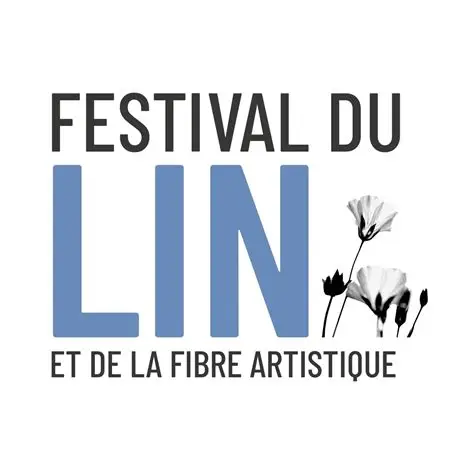
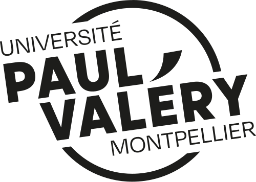
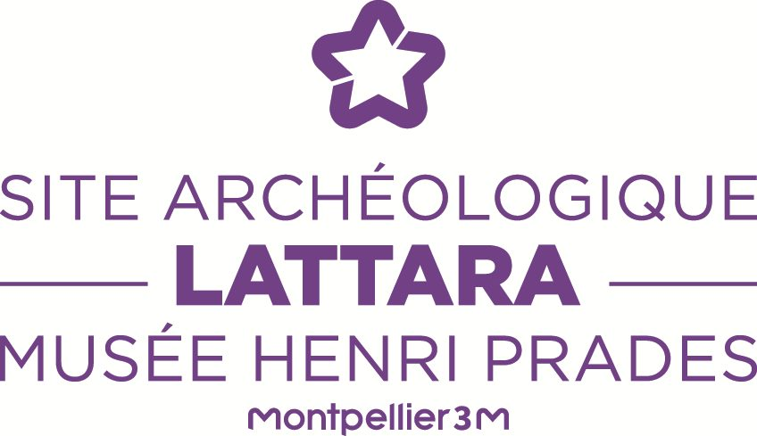
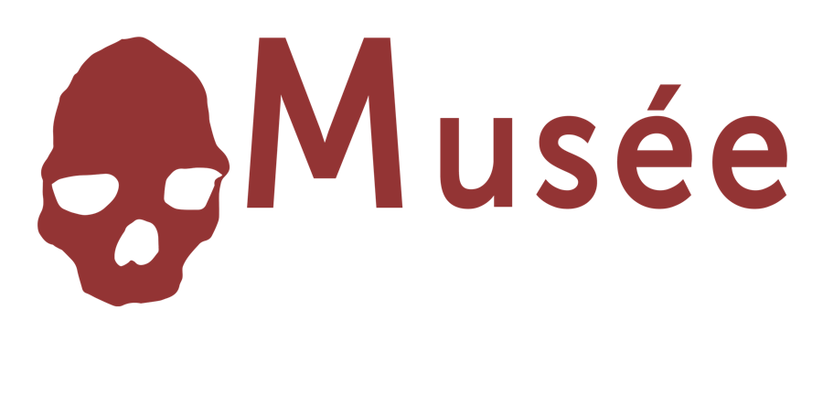
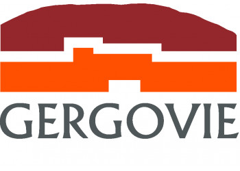
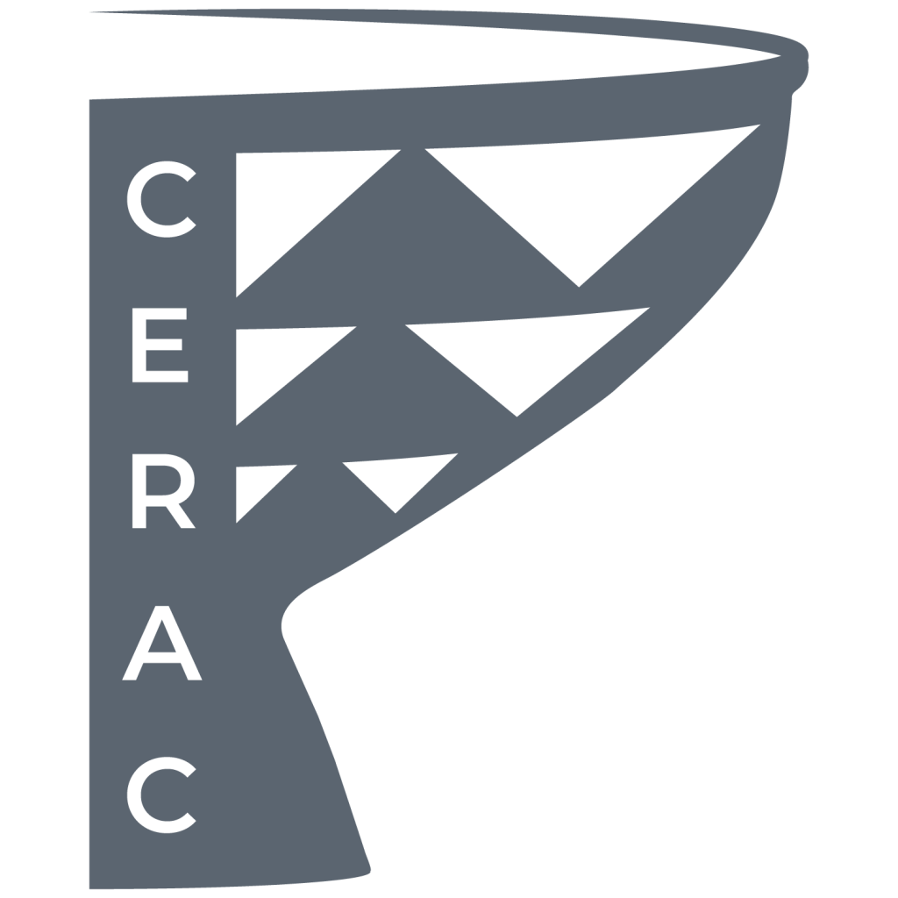

Deux fils, une même trame
Émilie Roma Sert
Archéologue du fil
Doctorante en archéologie (laboratoire ASM, Université Paul-Valéry Montpellier 3), spécialiste des systèmes de tissage. Formée au tissage sur métiers verticaux, au filage et à la teinture végétale, elle relie recherche, expérimentation et médiation pour rendre les savoir-faire textiles anciens accessibles à tous les publics.
Marie-Salomé Perrichon
Elle démêle les mots du tissage
Titulaire d’un master en égyptologie, elle étudie le vocabulaire du tissage dans l’Égypte ancienne. Formée au tissage sur métiers verticaux et à la teinture végétale, elle croise sources écrites, pratique et médiation pour faire découvrir les gestes textiles des sociétés du passé.
De la fouille au fil
L’équipe Néotisse réunit des profils spécialisés en archéologie, en techniques textiles anciennes et en médiation, autour d’une même envie de transmettre.
L’équipe Néotisse fait travailler ensemble des disciplines qui se rencontrent rarement : l’archéologie, l’égyptologie, les techniques textiles et la médiation culturelle. Cette complémentarité nourrit chacun de nos ateliers, conçus pour les musées, les sites archéologiques et les structures culturelles.
Les deux co-créatrices se sont formées auprès de l’association La Couenne au tissage sur métiers verticaux et à la teinture végétale. Ces apprentissages complètent leurs recherches : manipuler les fibres, les outils et les colorants permet de mieux comprendre les gestes décrits par les sources écrites et révélés par les vestiges.
Cette démarche relève de l’archéologie expérimentale : tester des hypothèses par la pratique pour mieux comprendre les sociétés du passé. Elle guide aussi nos projets, comme le Festival d’Archéologie Expérimentale d’Occitanie, organisé avec le musée de l’Aurignacien. Retrouvez nos prochains rendez-vous dans les actualités.
Ce que l’équipe Néotisse propose :
- des ateliers démonstratifs de filage, de tissage et de teinture végétale ;
- des ateliers participatifs de tissage aux tablettes ;
- des ateliers pour enfants, des projets d’expérimentation archéologique, des conférences… et bien plus encore !
Fondée en mai 2024 et basée à Montpellier, Néotisse est une association loi 1901. Pour imaginer avec l’équipe Néotisse un atelier, une conférence ou un projet commun, découvrez nos ateliers puis écrivez-nous depuis la page Contact : nous serons ravies de concevoir une intervention adaptée à vos publics.

Ils nous ont fait confiance





